A bootloader is a small application that can be used to upgrade firmware on a target device without the need for an external programmer or debugger. For PIC32CXBZ2 standalone bootloader, it provides below functionalities:
Device Firmware Upgrade over Serial(UART) interface, this is also called DFU over Serial.
Provide functionality support for wireless Over The Air Update, which is also called OTAU.
Provide various approaches to verify and authenticate firmware if enabled.
Display Console message if enabled
PIC32CXBZ2 bootloader is a standalone Harmony component used to configure bootloader code for PIC32CXBZ2 device. Click here to know about PIC32CXBZ2 standalone bootloader component, user can find more information as listed below:
Memory layout of PIC32CXBZ2 device
Boot memory information
Image metadata definition
Working of Bootloader
Flow diagram of Bootloader
Bootloader configuration options
Bootloader and DFU API usage
PIC32CX-BZ2/WB45 bootloader provided two methods to enter DFU mode, one is GPIO Trigger, another is Timber Based Trigger. Later section will have more detailed information about them.
For bootloader using GPIO Trigger method, user can find example code in wireless_apps_pic32cxbz2_wbz45\apps\bootloader\bootloader, and precompiled hex file at wireless_apps_pic32cxbz2_wbz45\apps\bootloader\bootloader\precompiled_hex\bootloader.X.production.hex
For bootloader using Timer Based Trigger method, user can find a precompiled hex file at wireless_apps_pic32cxbz2_wbz45\apps\bootloader\bootloader\precompiled_hex\bootloader_timer.X.production.hex. Since Timer Based Trigger bootloader creation is very similar to GPIO Trigger, there is no example code provided for it.
This section explains the steps required by a user to configure and generate a PIC32CXBZ2 standalone bootloader from scratching using MCC. User can find the bootloader example code(GPIO Trigger) generated using MCC in the path wireless_apps_pic32cxbz2_wbz45\apps\bootloader\bootloader
Enabled UART DFU
Enabled console to display messages
Enabled GPIO Trigger
Hardware requried is WBZ451 Curiosity Board, DFU mode is triggered by pressing SW2(GPIO PB4) on the board
Automatically reboot firmware after DFU is finished
WBZ451 Curiosity Board Top View
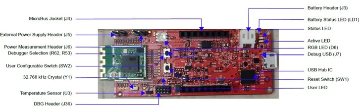Followings are steps to create the bootloader example(GPIO Trigger) from scratch.
Tip: New users of MPLAB Code Configurator are recommended to go through the overview.
1. Create a new MCC Harmony Project -- link for instructions, selecting WBZ451 as Target Device.
2. After MCC is launched, in Device Resource window, expand Harmony – Wireless – Driver, select Bootloader and add the component. Accept all the dialog messages by clicking Yes on message prompt. This will resolve dependencies among components and add connection in the graph.
Harmony-Wireless-Dirver, select Bootloader
Click all YES
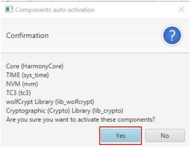Select Bootloader to Configure
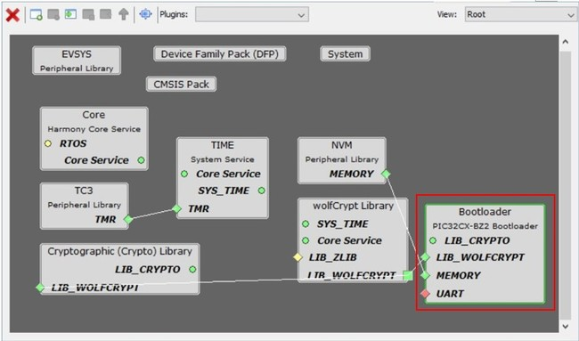GPIO Trigger mode options
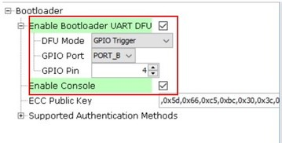GPIO Trigger is the option to trigger DFU mode, where user needs to hold the GPIO button during reset to put the bootloader into DFU mode. Use GPIO Port and GPIO Pin option to change the port and pin based on user hardware.
Tip: Other than GPIO Trigger, another trigger option Timer Based Trigger is also provided, where bootloader will be in DFU mode for amount of time before jumping to the user application. User can change the DFU Wait Time in Milliseconds to change the amount of time. By selecting Timer Based Trigger, a 32bit timer component TC0 is asked to be activated, click YES to accept adding TC0 and accept its connection. Following figures show Timer Based Trigger options and message prompt of adding TC0.
Timer Based Trigger mode options
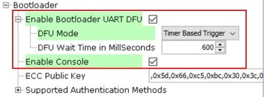Tip: For Supported Authentication Methods, 3 methods are provided: None, SHA256, and ECDSA256. Authentication methods with ECC Public Key are used to configure firmware authentication methods, including verifying firmware completion status and authenticating firmware vendor. For more details about these configurations, user can refer to here.
4. In the project graph window, selecting the Bootloader component, right click the dependency of UART, select SERCOM0 in the Satisfiers list. Then SERCOM0 component will be added into project graph.
Select SERCOM0 in UART Satisfiers
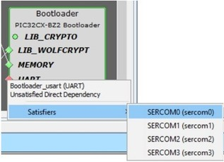Select SERCOM0 to Configure
Configure Receive Pinout and Transmit Pinout
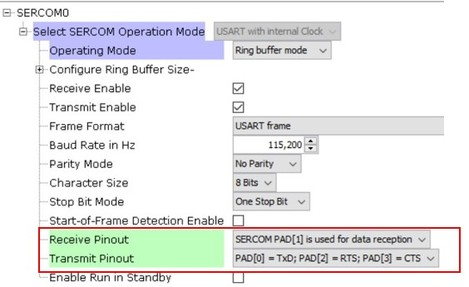Harmony - Peripherals - RCON
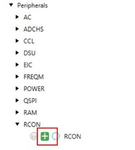Select RCON to Check its Options
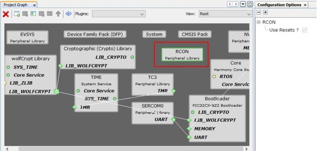Tip: RCON provides software reset function, adding RCON component is for enabling automatical firmware reboot after DFU completion.
Press MCC Generate Button to Generate the Code
9. To enable firmware auto reboot after DFU completion, it need host end to send a new command to bootloader. This new command is device Reset command defined to 0x12. To add this command definition, open file progexec.h, add code as below:
#define DEVICE_RESET_CMD 0x12
Add RESET_CMD Definition
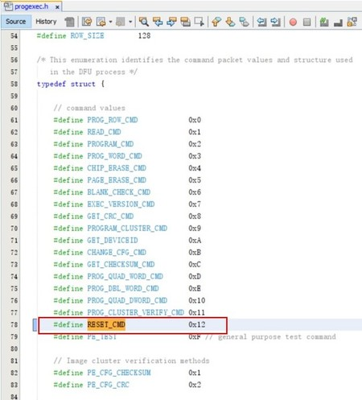Add RESET_CMD Command Handler
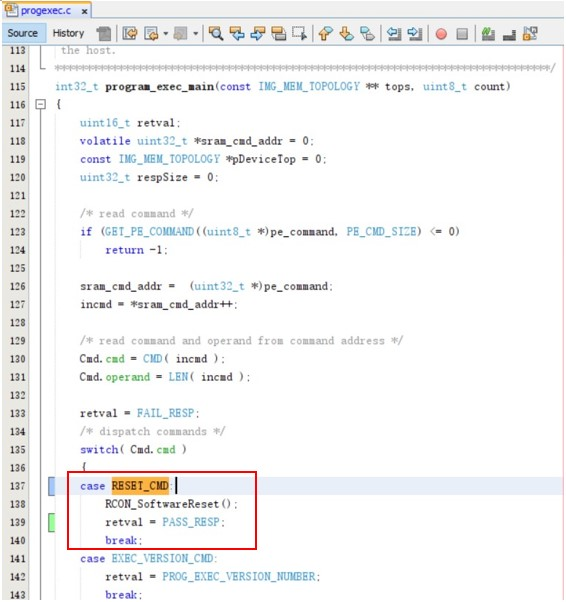Tip: firmware auto reboot also needs host end modification to send 0x12 command to reset device after DFU completion, so far only PC GUI tool(MicrochipUtilityTool.exe) is modified and supported it, Python scripts as another way have not been modified to support it.
10. On the IDE Tools bar, click Clean and Build Main Project to build the code, bootloader.X.production.hex file will be generated. User can also find precompiled hex files under folder wireless_apps_pic32cxbz2_wbz45\apps\bootloader\bootloader\precompiled_hex.
Click Clean and Build Main Project to Build Code
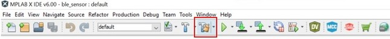While generated bootloader hex file should be added to user aplication as Loadable File, they shouldn't be used alone. Followings are talking about a few simple steps need to be handled at user application side.
To use Bootloader with a user application, there are a few steps to be configured at user application project. These steps are common to any user application that wants to have Bootloader capability, these steps include:
Add Bootloader Services component onto user application project and generate code
Add Bootloader as Loadable File/Project to create unified image
Program unified image to device.
Add Bootloader Services Component and Generate Code
Open any user application project with MPLAB X IDE, click on MCC icon on Tools bar to launch MPLAB Code Configurator to open project graph.
In Device Resource window, expand Harmony – Wireless – Driver, select Bootloader Services component and add it. This component generates the supporting linker file and MPLABX script needed for adding metadata header into application image(Project Properties is added with SignFirmware settings). Use Firmware Signature Verification API in Bootloader is the only option in Bootloader Services component. For DFU via UART, it is not necessary to enable firmware signature and verification, although user can do so if needs. While for OTAU, user must enable firmware signature and verification, by clicking on check box to Use Firmware Signature Verification API in Bootloader.
(Following project graph is just an example, user may have different graph depending on their application.)
Add Bootloader Services and Configure
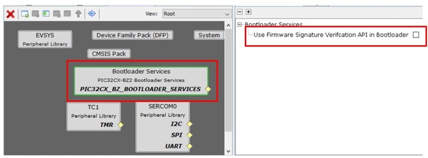After Bootloader Services component is added and configured, press Generate button to generate the user application code. In the generated new code, some code about bootloader service is added, as well as project’s linker script file is also automatically changed to reflect bootloader functionality.
Press Generate button to Generate User Application Code
ECDSA256-SHA256: firmware signature validation and data integrity check.
SHA256: firmware data integrity check.
None: no security, no integrity check.
Firmware signature and integrity check
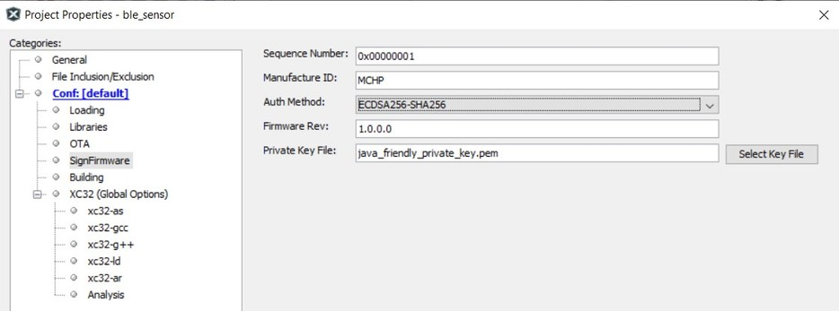Firmware integrity check
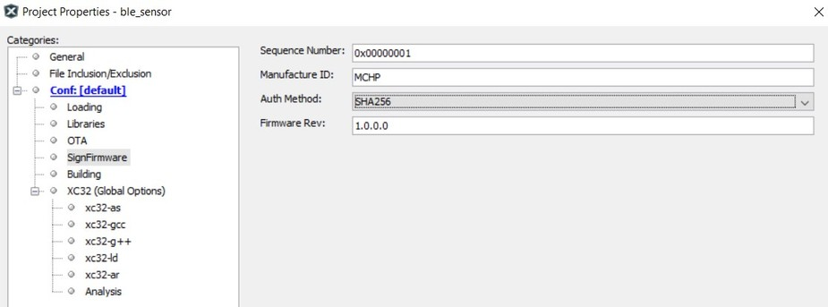Add Bootloader as Lodable File/Project to Create Unified Image
Once the new code is generated and configured, user need to add Bootloader as a loadable project/loadable hex file in the updated project. This enables MPLAB X IDE to merge both user application and bootloader and make an unified firmware by creating an unified image file.
To add Bootloader as loadable file, expand application project’s tree, right click Loadables, select Add Loadable File, then browse and add the bootloader hex file.
Right Click Loadables and Add Loadable File
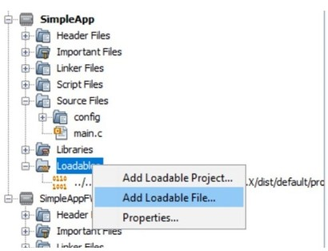Select Bootloader Precompiled Hex File as Loadable File
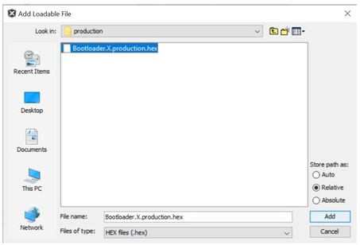Right Click Loadables and Add Loadable Project
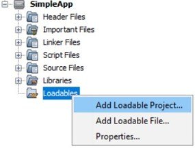Select Bootloader Project as Loadable Project
Unified Image Merged Both User Application and Bootloader
Program Unified Image
Click Make And Program Device Main Project to Program Unified Image